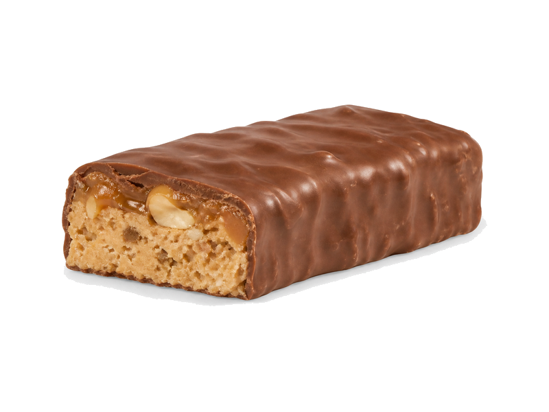

Słodycze i przekąski
Baton proteinowy
Baton proteinowy: 33 g białka, 360 kcal, 30 g węglowodanów i 12 g tłuszczu na 100 g. Kategoria: Słodycze i przekąski.
Kalorie360 kcalna 100 g
Białko / proteiny33 g
Węglowodany30 g
Tłuszcz12 g
Cena (szac.)~5,98 złza 100 g
Ceny zaktualizowano: maj 2026 (szacunek — ceny w popularnych supermarketach)
Porcja: sztuka (60g)
| Kalorie | 216 kcal |
|---|---|
| Białko | 19.8 g |
| Węglowodany | 18 g |
| Tłuszcz | 7.2 g |
| Cena (szac.) | ~3,59 zł |
Szczegółowe składniki odżywcze na 100 g
| Wartość energetyczna (kalorie) | 360 kcal |
|---|---|
| Białko (proteiny) | 33 g |
| Węglowodany | 30 g |
| Tłuszcz | 12 g |
| Tłuszcze nasycone | 6 g |
| Tłuszcze nienasycone | 6 g |
| Witaminy i minerały | Dodatki witaminowe, Magnez, Żelazo |
| Współczynnik kcal / 1 g białka | 10.9 |
| Cena produktu (szac. za 100 g) | ~5,98 zł |
| Cena za 100 g białka (szac.) | ~18,13 zł |